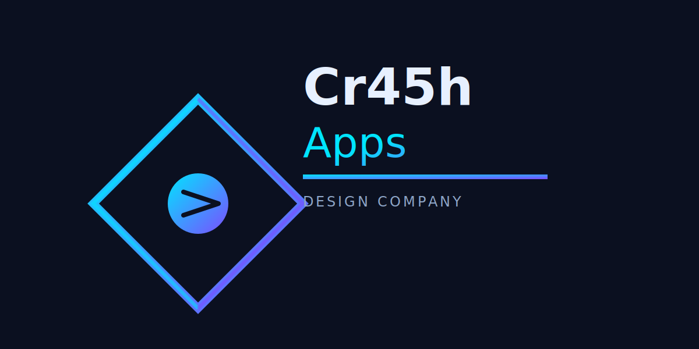
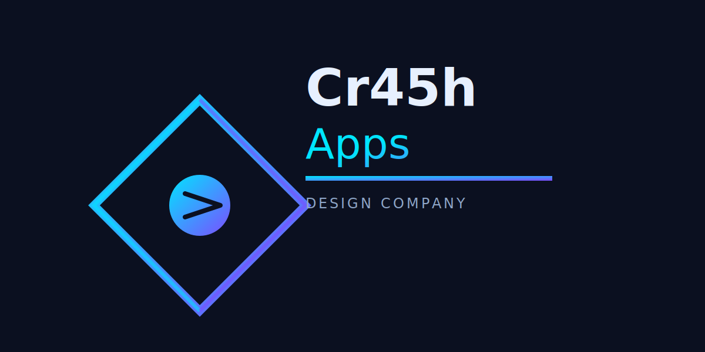

West Virginia Nature Simulation
Where Nature Meets Data
Loading environment...
🎮 Getting Started: Drag your mouse (or finger on mobile) to look around. The world updates in real-time with actual weather and accurate astronomy!
📍 Set Your Location (IMPORTANT!): This is the first thing you should do! Click the "⚙️ Settings" button to configure your location. You can:
• Enter your city name and coordinates manually (Latitude/Longitude)
• Search by ZIP code for automatic location detection
By setting your location, you unlock:
🌡️ Real-time weather data for your exact area • 🌙 Accurate moon phases & rise/set times • ⭐ Correct star positions & constellations • 🌞 Precise sunrise/sunset times • 🦅 Relevant bird species for your region
💡 Note: Default location is Hacker Valley, WV. Change it for your area!
🏪 Building Your Scene: Click the "🏪 Store" button to browse and place items. Select something, then click on the canvas to add it to your scene. Remove items with the "Remove Mode" toggle.
🌿 Plant Types Available:
🌲 Trees (Oak, Maple, Pine) • 🌸 Flowers (Wildflowers, Daisies) • 🌿 Shrubs & Bushes • 🍎 Fruit Trees
💡 Tip: Plants need sunlight during the day and water. Check plant health regularly!
🦌 Wildlife & Creatures: Animals appear naturally based on time of day and season. You'll see:
🦌 Deer (grazing during day) • 🐰 Bunnies (active dawn/dusk) • 🦉 Owls (hooting at night) • 🦇 Bats (at dusk) • 🐟 Fish (jumping in water)
⏰ Time & Weather: Check the info panel (bottom right) to see:
📍 Your location • 🕐 Local time • 🌞 Sunrise/Sunset • 🌙 Moon phase • 🌡️ Temperature & Weather
💡 Weather changes every day! Storm, snow, clear skies, etc.
📚 Community History (New!): Every 30 minutes, you may see a gentle “Did You Know?” popup about your town—founding details, key moments, and nearby historic sites.
🌟 Each popup includes an astronomy connection, linking historical dates to the night sky you see today.
If no data is available for your location, nothing is shown.
🌟 Stars & Constellations: On clear nights, hover over stars to learn about them and their constellations. Astronomy is accurate for West Virginia!
🌱 Plant Health Monitor: Click "🌿 Health" to see all your plants. You can track:
📊 Health status • 🌡️ Age & maturity • 📈 Growth progress • 🌿 Seasonal changes
🎵 Sound & Music: Enable sounds in settings to hear:
🦉 Owl hoots • 🦇 Bat squeaks • 🐟 Fish jumping • 💧 Water & rain • 🎼 Ambient music & wind
Control volumes individually in Settings!
💾 Save & Load Scenes: Use "⚡ Quick Actions" to save your favorite layouts. Give them names and reload them anytime!
📸 Share Your Creations: Use the screenshot button (in Quick Actions) to capture your scenes and share on social media!
⚙️ Customize Everything: Settings let you adjust:
🌫️ Cloud appearance • 🔊 Sound volumes • 📍 Location • 🌍 Zoom level
📱 Mobile Tips: Touch the screen and drag to move around. Tap a star or plant to see info (instead of hovering). Button layouts are optimized for portrait and landscape!
Loading environment...
